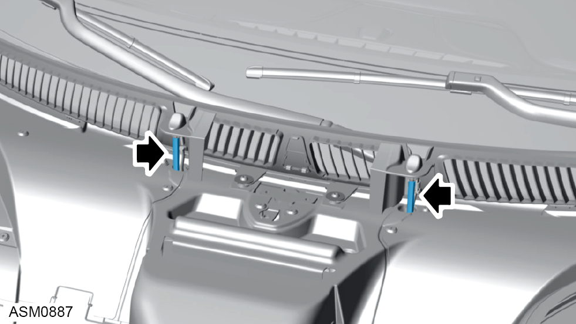

Washer Jet
Print
Operation Code: 17.21.07-02
Removal
- Open access hatch front. Refer to procedure.

- Remove hoses (x2) from washer jets.
NOTE: Use a suitable container to catch any spilled washer fluid.
- Disconnect harness connectors (x2) from washer jets.
- Disengage clips (x2) securing washer jets to brackets.
- Remove washer jets.
Installation
- Installation is the reverse of removal procedure.